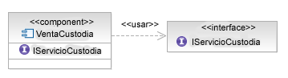

| Tarea: Identificar factores comunes y variabilidad |
|
 |
| Esta tarea se aplica a un número de elementos de análisis y diseño en los que la factorización de la viabilidad en dichos elementos y la factorización de factores comunes produce un resultado más robusto y flexible. |
| Disciplinas: Análisis y diseño |
|
Objetivo
Analizar los elementos del modelo suministrado, identificar cuáles de dichos elementos son comunes a las distintas
aplicaciones y separarlos de aquellos elementos que varíen en las distintas aplicaciones. Al identificar estos
elementos que varían según la aplicación podemos modelar de forma explícita los tipos de variabilidad y documentarlos
para clientes de los elementos de modelo.
|
Relaciones
| Roles | Realizador principal:
| Otras actividades adicionales que realiza:
|
| Entradas | Obligatoria:
| Opcional:
|
| Salidas |
|
| Uso del proceso |
|
Descripción principal
Esta tarea se puede aplicar a cualquier modelo de análisis y diseño en el que los elementos del modelo saquen provecho
de las técnicas descritas aquí. Las técnicas se derivan de la experiencia en ingeniería de línea de productos, en que
los elementos comunes son los que unen los productos de la línea de productos y la variabilidad es la que distingue un
producto de otro, y el desarrollo de patrones, en el que los elementos comunes son la estructura del patrón y la
variabilidad se utiliza para definir los parámetros del patrón.
El enfoque consiste en identificar primero los elementos del diseño que serán comunes a todas las aplicaciones del
elemento, identificar después los elementos que variarán en cada aplicación y, por último, documentar la variabilidad
(aquí distintos dominios utilizan diferentes enfoques).
Ejemplo
En el siguiente diagrama de clase vemos los elementos de un contrato legal, identificando que el contrato es entre dos
o más partes. Al identificar los elementos comunes vemos que los elementos centrales son la estructura del propio
contrato y las distintas relaciones con las partes.

No obstante, un contrato legal puede ser entre distintas personas, organizaciones o agencias gubernamentales y,
por tanto, tenemos en cuenta que dicha parte es un elemento variable según tipo. En la documentación
definimos una jerarquía de tipos para la parte y también señalamos a la parte como una clase abstracta, de modo que los
tipos concretos deberán utilizarse en un diseño real.

|
Pasos
|
Identificar elementos comunes y variables
La identificación de los elementos de un diseño que no cambian al utilizarse en distintas situaciones se realiza a
menudo mejor de forma iterativa. Con un conjunto de casos de ejemplo, cree diagramas de instancias y observe al
compararlos en los distintos casos de ejemplo qué elementos son comunes en todos los casos. Cuanto mayor sea el número
de casos de ejemplo de que disponga, mayor será obviamente el número de puntos de datos y, por tanto, podrá validar
pronto los resultados y las suposiciones.
En la descripción de elementos comunes de un modelo, a menudo resulta valioso ofrecer alguna forma de elemento de
encapsulación para separar estos elementos del resto del diseño. La selección de una técnica de encapsulación depende
del contexto, pero puede ser:
-
La introducción de un paquete para poseer los elementos. Esto sólo cambia la propiedad de los elementos pero no la
relación entre los elementos o los elementos de fuera del paquete (se aplica más habitualmente a los modelos de
análisis).
-
La introducción de un componente para poseer los elementos. Esto no sólo cambia la propiedad sino que también
introduce una encapsulación formal para que pueda elegir definir una interfaz que exponga los elementos relevantes
en el exterior.
-
La introducción de una colaboración de UML 2.0 permite que los elementos comunes se definan como parte de la
estructura compuesta de la colaboración, así como los elementos variables como roles; posteriormente se puede
realizar un enlace desde los roles de elemento variables a los elementos concretos. Se trata de un enfoque común
para definir los patrones de diseño en UML. Tenga en cuenta que una colaboración no posee los elementos en sí, sólo
roles correspondientes a dichos elementos.
-
La introducción de una clase en plantilla en la que la plantilla se corresponda con el tipo de elementos variables;
se trata de un enfoque común en lenguajes como Ada, C++, Eiffel y ahora Java, que da soporte a programación
genérica.
-
Simplemente puede elegir utilizar una clave visual. Es común, por ejemplo, utilizar un único diagrama (tal como se
muestra en la descripción principal) y colorear los elementos comunes y variables de forma distinta.
Ejemplo
En el caso de nuestro contrato legal, hemos elegido introducir un componente que poseerá los elementos, tal como se
muestra en la siguiente figura.

|
Formas de variabilidad de documento
La propia variabilidad adopta una gran variedad de formatos, cualquiera de los cuales puede ser adecuado. En algunos
casos hay más de un formato en una determinada situación. Los tipos comunes de variabilidad son los siguientes:
-
Variabilidad por tipo: por ejemplo, en el caso de nuestro contrato legal, la variabilidad se basa
en la jerarquía de tipos utilizada para representar al concepto "Parte"; se trata de una forma común y se describe
fácilmente con UML como diagrama de clase (tal como se muestra en la descripción principal).
-
Variabilidad por rol: en este caso el tipo del elemento es normalmente inmaterial (o de segunda
importancia); es el rol que desempeña el que tiene valor. Este tipo de variabilidad se encuentra a menudo en
el desarrollo de patrones en el que el patrón debería aplicarse al mayor conjunto de posibilidades y, por tanto,
los parámetros del patrón se definen desde el punto de vista único de los roles que desempeñan los elementos
proporcionados.
-
Variabilidad de implementación: en este caso, el elemento suministrado es necesario para
realizar algún comportamiento y, por tanto, necesita implementar una interfaz determinada (o, dicho más
formalmente, un protocolo) para ser aplicable. En tal caso es normal que el contenedor de los elementos
comunes describa la interfaz y tenga un parámetro de plantilla del tipo de interfaz o requiera la interfaz.
Ejemplos
El siguiente diagrama muestra la noción de variabilidad por rol. En él tenemos una nueva colaboración "Venta" que
indica la relación entre el vendedor y el comprador como partes de un contrato. En UML, resulta posible crear una
incidencia de colaboración que enlace los roles "comprador" y "vendedor" con elementos reales del modelo.

De forma alternativa, observemos el proceso de venta con un servicio de fideicomiso. Capturamos las funciones
necesarias de cualquier servicio de fideicomiso como interfaz, con un conjunto de operaciones correspondientes a las
responsabilidades que esperamos que realice el servicio de fideicomiso. Con esto creamos una colaboración de plantilla
en la que utilicemos la interfaz de fideicomiso como tipo del parámetro de plantilla. Ahora es posible instanciar la
plantilla suministrando cualquier clase o componente que ejecute la interfaz IEscrowService.

Por último, podríamos simplemente utilizar un componente (o clase) para contener nuestros elementos comunes y hacer que
requiera la interfaz IEscrowService con la relación de <<uso>> de UML 2.0 tal como aparece en el siguiente
diagrama. Este enfoque es totalmente válido en un nivel de diseño ya que también es un enfoque de programación común en
el desarrollo basado en componentes o incluso sólo en lenguajes como Java.

La elección de la técnica, como siempre, dependerá de la situación, lo que incluye consideraciones como las siguientes:
-
El tipo de variabilidad que se vaya a expresar, tal como hemos visto anteriormente.
-
Si el elemento es parte de un modelo de análisis, diseño o implementación.
-
Las capacidades y expectativas de los interesados en el modelo.
|
|
Más información
© Copyright IBM Corp. 1987, 2006. Reservados todos los derechos.
|
|